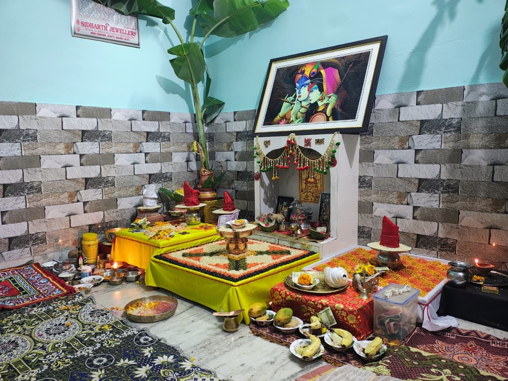
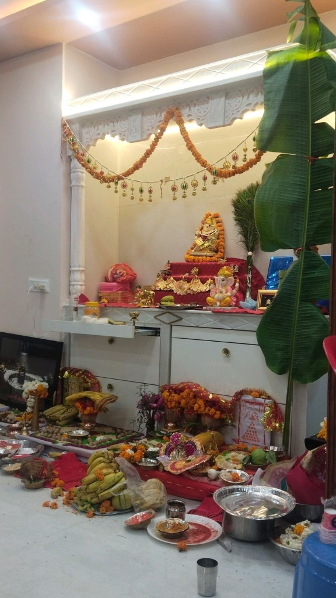
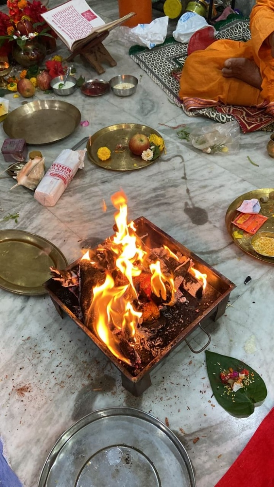
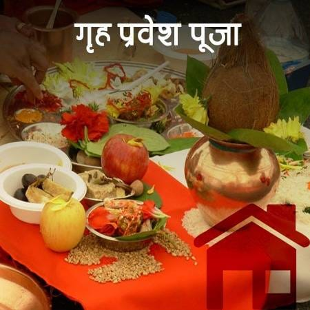

Pandit Sirij Sharma
Your Trusted Guide to Astrology & Puja Services
Bring peace, prosperity, and spiritual harmony into your life. Traditional Vedic guidance by Senior Acharya Pandit Vipin Sharma and Pandit Sirij Sharma, with authentic Pujas performed with complete rituals & pure devotion.

Vedic Parampara
Preserving the purity of ancient scriptures and traditions. Every puja is done with detailed Vedic mantras, precise samagri, and authentic vidhi-vidhan.
“लोकः समस्ताः सुखिनो भवन्तु”Our Vedic Heritage
Hailing from a family of traditional scholars, our services are led by Senior Acharya Pandit Vipin Sharma (Main Pandit) and his son Pandit Sirij Sharma.
Together, they have dedicated their lives to studying Vedic scriptures, Jyotish (Astrology), and Karamkand (Puja Rituals). Under the guidance and blessings of Pandit Vipin Sharma, every ritual is performed with strict adherence to Vedic rules and pure devotion.
Whether you require a detailed Kundli Match, want to perform a Grah Shanti Puja, or book an Online Puja from abroad, Pandit Ji ensures that every ritual is performed with Vedic accuracy and blessings that manifest positive change in your life.
Our Sacred Services
Select from our authentic Vedic services designed to bring prosperity, health, and happiness.
Online Puja Booking
Authentic, customized pujas performed online with your name and gotra.
View Details →Online Janmdin Puja
Bless your new year with Vedic chants, Ayushya Homa, and planetary peace.
View Details →
Online Durga Paath
Incorporate the divine energy of Maa Durga to remove obstacles and negativity.
View Details →
Online Havan
Sacred fire rituals for home purification, peace, and specific planet remedies.
View Details →Online Paath Puja
Recitation of holy scriptures like Sundarkand, Satyanarayan, and Shiv Puran.
View Details →Online Kundli Check
Detailed horoscope reading and precise guidance for Job, Marriage & Love.
View Details →Mul Shanti Paath
Vedic Mool Nakshatra Shanti ritual to remove birth obstacles and bring peace.
View Details →Janmastami Vrat Puja
Celebrate Lord Krishna's birth with authentic Janmashtami fast rituals and prayers.
View Details →
Grih Pravesh Puja
Consecrate your new home with Vastu Shanti, havan, and traditional home-warming Pujas.
View Details →Devotee Testimonials
Real experiences shared by families who received solutions and peace through Pandit Ji's guidance.
"We booked Online Durga Paath during Navratri. Pandit Ji performed the rituals with absolute sincerity, and we could feel the positive energy right in our home. Strongly recommended."
"I was facing severe career blockages and delays in promotion. Pandit Ji checked my Kundli, explained the positioning of Saturn, and suggested planetary remedies. The advice worked beautifully!"
"Amazing experience with Online Havan for our new house. Even though we were abroad, Pandit Ji guided us step-by-step and chanted the mantras so clearly. We felt completely connected."
Schedule Your Consultation
Have questions about a puja or want to analyze your Kundli? Contact Pandit Sirij Sharma directly via WhatsApp or Call for personal, confidential assistance.